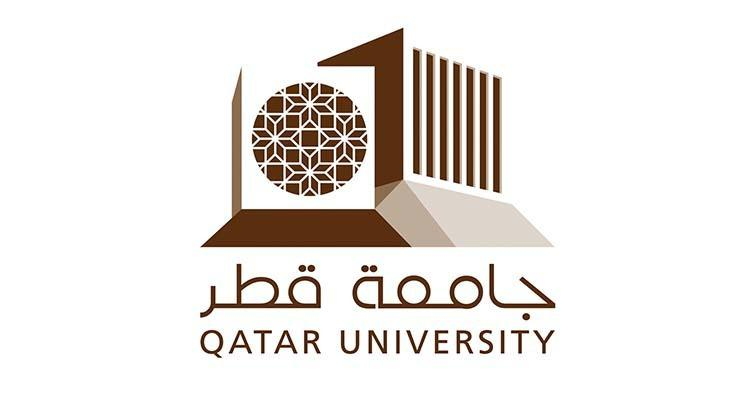
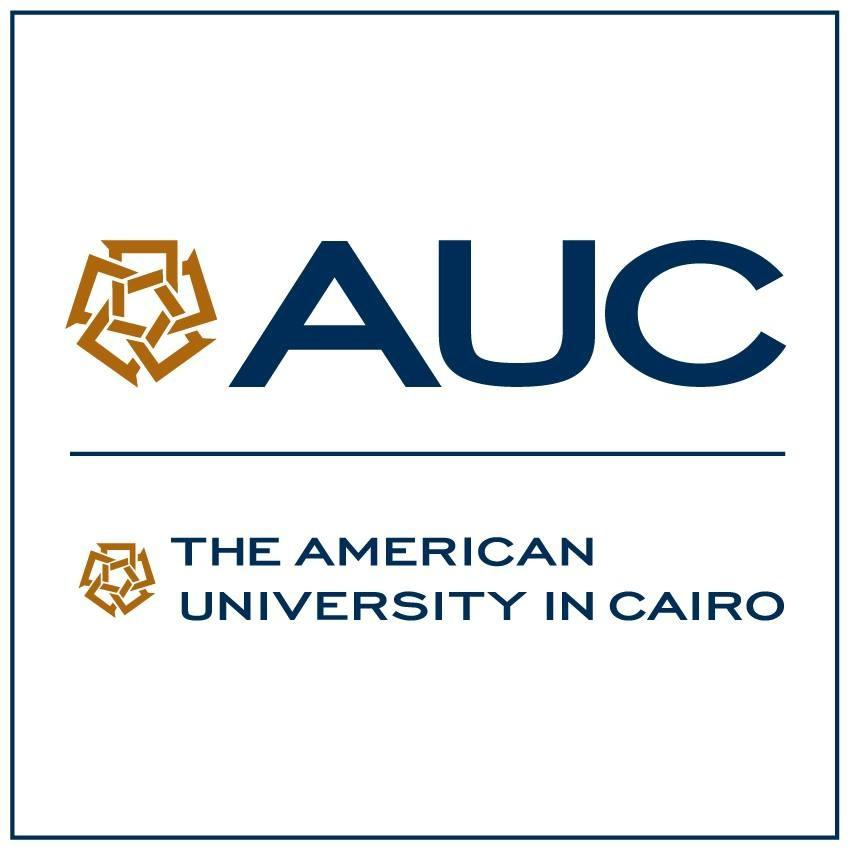

Arabic Language and Literature
Arabic Language and Literature definition
The Arabic language is one of the most widely used and widely used languages in the world. And we all speak Arabic, and most of you who are reading this article now, speak it fluently, and Arabic is his mother tongue. As it is the official language in the countries of the Arab world as a whole
First, the specialization is called “Arabic Language and Literature”, and in English “Arabic Language and Literature”, where it is concerned with the study of the Arabic language in all its fields. It is based on students reaching the level of professionalism, eloquence, and fluency in the language; It aims to provide them with the skills of analysis, criticism, thinking, writing, public speaking, rhetoric, reading, and listening, in addition to producing texts in the Arabic language. So that pioneers of specialization eventually reach a level of linguistic creativity
Number of years studying Arabic language and literature
The study stage does not require more than four academic years to study languages and literature in general, and Arabic language in particular, where students can obtain a bachelor’s degree in Arabic language and literature within three to three and a half years. This depends on the number of hours, the classes the students complete, and whether or not they take summer classes
The best universities to study Arabic language and literature
- United Arab Emirates University
-
 King Saud University
King Saud University -  Qatar university
- The American University in Cairo
-
 King Abdulaziz University
King Abdulaziz University
The most famous writers of the Arab world

Ahmad Shawqi , أحمد شوقي
Ahmed Shawqi is one of the greatest poets of Arabic literature, as he is called the "Prince of Poets", and he organized Arabic poetry in all its purposes, which range from praise, lamentation, and flirtation
-----------------------
Adonis, أدونيس
He is the Syrian poet Ali Ahmed Saeed, one of the most controversial poets. He used the language in a way that included a great deal of creativity and experimentation, reserving the importance of not deviating from the classical Arabic language in addition to its grammatical standards
-----------------------
in the end
The Arabic language specialization also provides students with the information and skills necessary to achieve many of the most important things in the language, such as correct pronunciation, proper expression, and avoiding grammatical and linguistic errors. It is also sufficient to mention that it is the official language throughout.,I hope you choose your future with pleasure ♡
« Previous